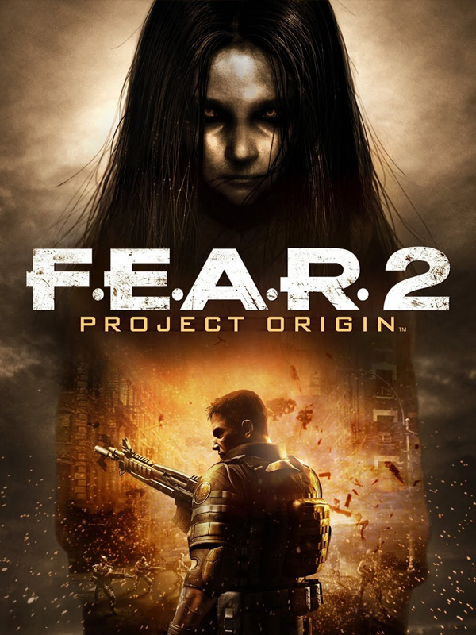

F.E.A.R. 2: Project Origin
F.E.A.R. 2: Project Origin
Details
|  | |
| Spielzeit | 7h 23m 0s |
| Letzte Aktivität | 31.05.2015 17:13:08 |
| Hinzugefügt | 19.12.2019 |
| Modifiziert | 10.11.2022 14:10:02 |
| Fertigstellungsstatus | Watched |
| Bibliothek | Steam |
| Quelle | Steam |
| Plattform | PC (Windows) |
| Veröffentlichungsdatum | 12.02.2009 |
| Community Bewertungen | 79 |
| Kritiker Punkte | 79 |
| Benutzerwertung | |
| Genre | Action |
| Entwickler | Monolith |
| Verleger | Warner Bros. Interactive Entertainment |
| Eigenschaft | Multiplayer Single Player |
| Links | Community Hub Discussions News Store Page PCGamingWiki |
| Tag | |
Beschreibung
Deployed just minutes before the blast triggered by the original F.E.A.R. team, you assume the role of Special Forces Sgt. Michael Becket as your routine mission quickly turns into a fight for survival against the wrath of Alma Wade. As Alma's terrifying power surges out of control, your squad is forced to battle through an apocalyptic landscape in search of clues for how to destroy her!

- Strategic environmental combat opportunities available to both you and your enemies
- Slow time using your character's enhanced reflexes
- In your face close-quarter action in a variety of indoor and outdoor environments
- Battle all-new enemies that employ advanced combat tactics
- Test your nerves and face your FEARS as you battle new characters and unravel a terrifying mystery
- Utilize the world interaction enhancements to create instant cover or remove obstacles
- Play with and against friends in multiplayer competition
- Enhanced graphics engine takes action horror to new heights through enhanced visuals and effects
- Enemies behave realistically and use the environment against you through vastly enhanced enemy Artificial Intelligence
- Maintains the authenticity of the Alma storyline and players will know this is the only place to continue the saga